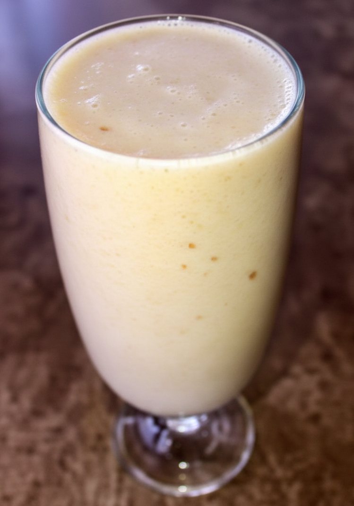

Licuado de banano
El licuado de banano es una bebida nutritiva y fácil de preparar. El banano aporta energía natural, potasio y vitaminas del complejo B. Es ideal para el desayuno o como bebida refrescante durante el día.
Ingredientes:
- 2 bananos maduros
- 1 taza de leche
- 1 cucharada de miel
- Hielo al gusto